Методические рекомендации по написанию, оформлению и защите контрольной работы
Контрольная работа
Задача 1
Задача 2
Контрольная работа
Задача 1
Задача посвящена анализу переходного процесса в цепи первого порядка, содержащей резисторы, конденсатор или индуктивность. В момент времени t = 0 происходит переключение ключа К, в результате чего в цепи возникает переходной процесс.
1. Перерисуйте схему цепи (см. рис. 1) для Вашего варианта (таблица 1).
2. Выпишите числовые данные для Вашего варианта (таблица 2).
3. Рассчитайте все токи и напряжение на С или L в три момента времени t: ,
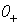
, ¥.4. Рассчитайте классическим методом переходный процесс в виде
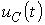
,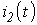
,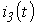
,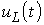
в схемах 6 – 10. Проверьте правильность расчетов, выполненных в п. 4, путем сопоставления их с результатами расчетов в п. 3.|
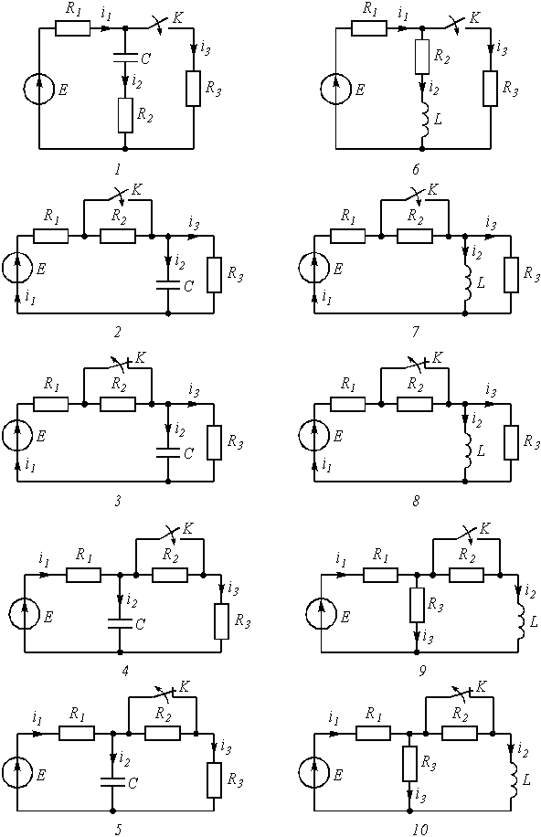 Рис. 1 |
5. Постройте графики переходных токов и напряжения, рассчитанных в п. 4. Определите длительность переходного процесса, соответствующую переходу цепи в установившееся состояние с погрешностью 5%.
6. Рассчитайте ток
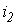
операторным методом.
| Варианты |
Номер схемы или задания |
|
00 10 20 30 40 50 60 70 80 90 01 11 21 31 41 51 61 71 81 91 02 12 22 32 42 52 62 72 82 92 03 13 23 33 43 53 63 73 83 93 04 14 24 34 44 54 64 74 84 94 05 15 25 35 45 55 65 75 85 95 06 16 26 36 46 56 66 76 86 96 07 17 27 37 47 57 67 77 87 97 08 18 28 38 48 58 68 78 88 98 09 19 29 39 49 59 69 79 89 99 |
1 2 3 4 5 6 7 8 9 10 |
Таблица 2
| Варианты |
С, нф или L, мГн |
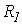 , кОм |
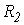 , кОм |
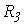 , кОм |
Е, В |
|
От 00 до 09 От 10 до 19 От 20 до 29 От 30 до 39 От 40 до 49 От 50 до 59 От 60 до 69 От 70 до 79 От 80 до 89 От 90 до 99 |
20 10 10 15 15 15 20 20 15 10 |
2 1 1 1 2 1 2 2 1 0,5 |
2 1 2 1 2 2 1 1 0,5 1 |
2 1 2 2 1 1 2 1 0,5 1 |
10 5 12 12 10 10 12 12 5 5 |
Типовая задача Т1
Цепь (рис. 2 а) содержит резисторы R1 = 1 кОм, R2 = 1,5 кОм, R3 = 0,5 кОм, R4 = 2,5 кОм, индуктивность L = 6,3 мГн и источник постоянного напряжения Е = 9 В. В момент t = 0 происходит размыкание ключа К и в цепи возникает переходной процесс. Требуется: рассчитать основные характеристики процесса; получить выражения для токов i2(t), i3(t) и напряжения uL(t) классическим методов; построить графики указанных токов и напряжений; рассчитать ток i2(t) операторным методом.
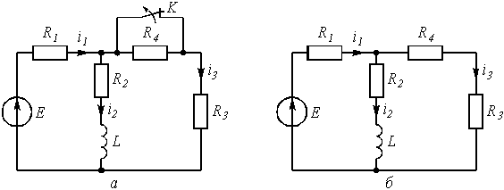
Рис 2Решение
1. Находим токи i1, i2, i3 и напряжение uL в три момента времени t = 0–, 0+ и ¥.1.1. Момент t = 0–. Он соответствует стационарному состоянию цепи до коммутации. В этом состоянии резистор R4 закорочен ключом К и не влияет на работу цепи. Сама схема (рис. 2 а) представляет собой цепь, в которой uL(0–) = 0, поэтому она может быть рассчитана по следующим формулам:
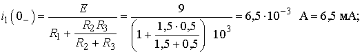
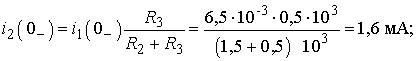
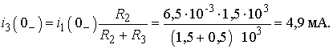
1.2. Момент t = 0+. Это первое мгновение после размыкания ключа. В соответствие с законом коммутации
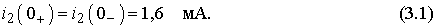
Остальные величины находим путем составления и решения системы уравнений по законам Кирхгофа, описывающих электрическое состояние цепи в момент t = 0+ (рис. 2 б):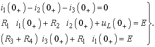
После числовых подстановок с учетом (3.1) получим:
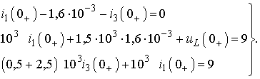
Решая систему, находим:
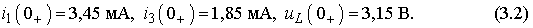
|
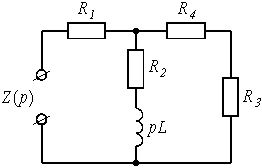 Рис. 3 |
1.3. Момент t = ¥. Означает новое стационарное состояние цепи после окончания переходного процесса. Внешне схема цепи при t = ¥ соответствует рис. 2 б, причем
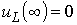
, а токи рассчитываются по формулам: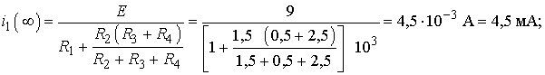
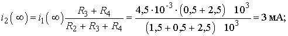
2. Расчет токов i2(t), i3(t) и напряжения uL(t) после коммутации классическим методом.
Переходный процесс в цепях первого порядка (с одним реактивным элементом) описывается уравнением вида
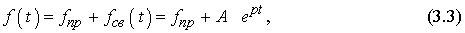
где fпр = f (¥) – принужденная составляющая искомой величины, равная ее значению при t = ¥; fсв(t) – свободная составляющая; A – постоянная интегрирования; р – корень характеристического уравнения, определяющий в конечном итоге длительность переходного процесса. Так как р является общей величиной для всех токов и напряжений в конкретной цепи, то расчет переходного процесса целесообразно начать с определения р.
2.1. Характеристическое уравнение для расчета р составляется по операторной схеме замещения, отражающей работу цепи после коммутации, и показанной на рис. 3.
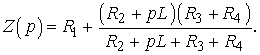
Принимая Z( p) = 0, получим характеристическое уравнение
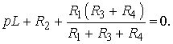
Решение уравнения дает корень
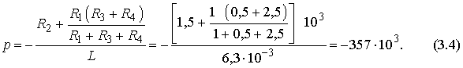
Величина
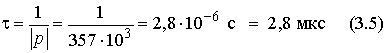
называется постоянной времени цепи.
2.2. Расчет i2(t).
В соответствии с (3.3) запишем:
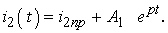
Учтем, что i2пр = i2(¥) = 3 мА. Величину A1 найдем из рассмотрения i2(0+) с учетом независимого начального условия (3.1):
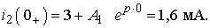
Откуда A1 = 1,6 – 3 = –1,4. Тогда
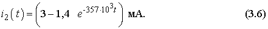
2.3. Расчет uL(t).
Воспользуемся законом Ома для индуктивности
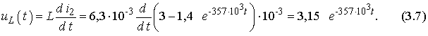
2.4. Расчет i3(t). Ведется аналогично расчету i2(t).
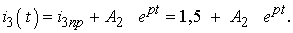
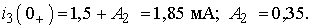
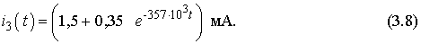
2.5. Проверка правильности расчетов производится путем анализа выражений (3.6), (3.7) и (3.8) в моменты времени t = 0 и ¥.
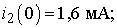
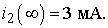
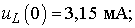
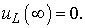
Полученные значения всех величин совпадают с результатами расчетов в п. 1.
3. Построение графиков переходного процесса.
Для построения графиков необходимо составить таблицу значений i2(t), i3(t), uL(t) в различные моменты времени (таблица 3).
| t |
0 |
0,5 t |
t |
1,5 t |
2 t |
3 t |
4 t |
|
t, мкс |
0 |
1,4 |
2,8 |
4,2 |
5,6 |
8,4 |
11,2 |
|
|
1,6 |
2,16 |
2,5 |
2,7 |
2,8 |
2,93 |
2,97 |
|
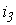 , мА |
1,85 |
1,71 |
1,63 |
1,58 |
1,54 |
1,51 |
1,5 |
|
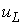 , В |
3,15 |
1,9 |
1,16 |
0,7 |
0,41 |
0,16 |
0,06 |
|
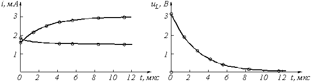 Рис. 4 |
Кривые i2(t) и i3(t) могут быть построены на одном графике. При выборе масштабных делений по осям графиков учитываются максимальные значения соответствующих величин. Для тока и напряжения целесообразно принять в 1 см по 1 мА и 1 В соответственно. Масштаб по оси времени определяется длительностью переходного процесса. Известно, что экспоненциальные функции за время t = 3t изменяется на 95% от своего максимального значения. Тогда можно принять, что переходный процесс в цепях первого порядка заканчивается через 3t с погрешностью 5%. Учитывая (3.5), получим для данной схемы tпер.пр = 3t = 8,4 мкс. Для построения графика удобно принять масштаб по оси времени 2 мкс в 1 см.
4. Расчет тока i2(t) операторным методом.
|
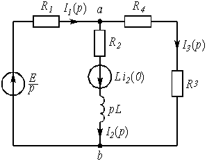 Рис. 5 |
Для состояния цепи при t ³ 0 (рис. 2) составляется операторная схема замещения, которая учитывает независимые начальные условия в виде дополнительных (расчетных) источников напряжения LiL(0) или uC(0)/p. В данной задаче таким источником будет Li2(0) (рис. 5).
Используя закон Ома, в операторной форме, запишем
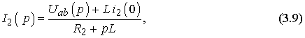
где Uab( p) может быть найдено по методу узловых напряжений:
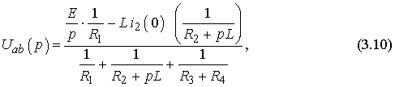
Подставляя (3.10) в (3.9), получим
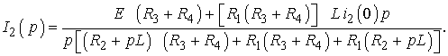
После числовых подстановок
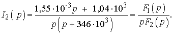
Используя теорему разложения, найдем оригинал тока:
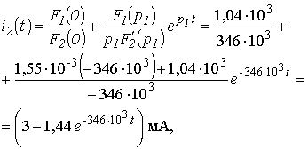
которое совпадает с выражение (3.6), полученным классическим методом.
Задача 2
Задача посвящена временному и частотному (спектральному) методам расчета реакции цепей на сигналы произвольной формы. В качестве такого сигнала используется импульс прямоугольной формы (видеоимпульс).
Электрические схемы цепей (рис. 6) содержат емкости С или индуктивности L, а также сопротивления R. Для всех вариантов
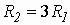
. В схемах, где имеется сопротивление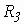
, его величина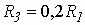
. Во всех схемах входным напряжением1. Перерисуйте схему Вашего варианта (см. табл. 1 и рис. 6). Выпишите исходные данные Вашего варианта (таблица 4).
Таблица 4
| Варианты |
С, пф или L, мкГн |
, кОм |
|
|
| От 00 до 09 От 10 до 19 От 20 до 29 От 30 до 39 От 40 до 49 От 50 до 59 От 60 до 69 От 70 до 79 От 80 до 89 От 90 до 99 |
20 25 30 20 25 30 20 25 30 25 |
1 1 1 2 2 2 3 3 3 2,5 |
30 35 40 35 40 45 35 40 45 35 |
3 4 5 6 7 3 4 5 6 7 |
Временной метод расчета
2. Рассчитайте переходную  и импульсную
характеристики цепи по напряжению классическим или операторным методами (по
выбору).
и импульсную
характеристики цепи по напряжению классическим или операторным методами (по
выбору).
Рис.6
3. Рассчитайте реакцию цепи в виде выходного напряжений используя:
- интеграл Дюамеля;
- интеграл наложения.
- Постройте временные диаграммы входного и выходного напряжений.
Частотный метод расчета
5. Рассчитайте комплексные спектральные плотности входного и выходного сигналов.
6. Рассчитайте и постройте графики модулей , и модуля комплексной передаточной функции цепи , как функций от циклической частоты f в диапазоне частот 0 - .
Типовая задача Т2
Схема цепи, приведенная на рис.
7 а, содержит емкость С = 10 пф и сопротивления  = 1 кОм,
= 3 кОм. На входе цепи действует прямоугольный импульс (рис. 8) длительностью
= 60 нс
и амплитудой
= 4 В. Выполнить расчеты в соответствии с заданием к задаче 2.
= 1 кОм,
= 3 кОм. На входе цепи действует прямоугольный импульс (рис. 8) длительностью
= 60 нс
и амплитудой
= 4 В. Выполнить расчеты в соответствии с заданием к задаче 2.
Решение
1. Расчет переходной и импульсной характеристик классическим методом.
1.1. Переходная характеристика цепи рассчитывается, как переходной процесс в виде тока или напряжения, вызванный включением цепи с нулевыми начальными условиями на постоянное напряжение 1 В. В соответствие с этим составляется схема включения (рис. 7 б) , на которой E = 1 В. В задаче определяется переходная характеристика по напряжению относительно выходного контура , поэтому можно записать, что:
, (3.11)
Напряжение в схеме на рис. 3.7 б может быть рассчитано с помощью общей формулы (3.3) расчета переходных процессов в схемах первого порядка:
,
Рис.7
где = 1 В; р – корень характеристического уравнения, находится из операторного сопротивления схемы , и равен ; постоянная интегрирования находится из рассмотрения при :
(нулевое начальное условие).
Откуда . Окончательно
,
где – постоянная времени цепи.
Подставляя в (3.11), получим:
(3.12)
Обратить внимание, что в (3.12) определяется только элементами цепи и не зависит ни от токов, ни от напряжений.
1.2 Импульсная характеристика цепи h(t) есть производная от переходной характеристики h(t) = g¢ (t). Однако следует учесть, что, если переходная характеристика отлична от нуля при t = 0, т.е. имеет скачок при t = 0, то при дифференцировании появляется дополнительное слагаемое:
h(t) = g(0)d (t) + g¢ (t).
В рассматриваемой задаче = 0,75, поэтому
, (3.13)
где d (t) – импульсная функция (функция Дирака).
2. Расчет выходного напряжения
 временным
методов.
временным
методов.
2.1. Использование интеграла Дюамеля.
Из известных четырех формул интеграла Дюамеля наиболее общий характер имеет формула вида
(3.14)
в обозначениях величин и понятий, принятых в рассматриваемой задаче. Переменной интегрирования в (3.14) является t (не путать с постоянной времени ).
Входное напряжение имеет форму прямоугольного импульса (рис. 3.8), аналитическая запись которого может быть представлена как
(3.15)
Из (3.15) следует, что и что производная = 0 или для переменной = 0.
Число участников интегрирования в (3.14) определяется числом участков в функции, описывающей входной сигнал, в которых она непрерывна и дифференцируема [1, с. 188]. Для функции (3.15) таких участков в виде интервалов времени два: и . Необходимость учета второго участка, когда , объясняется тем, что за время действия импульса в реактивных элементах цепи накапливается энергия электрического и магнитного полей, которая после окончания импульса постепенно убывает до нуля, создавая напряжение и токи в цепи. Анализ этих величин и проводится в интервале .
Важнейшей характерной особенностью аппарата интеграла Дюамеля является то, что при записи реакции цепи на каждом новом интервале времени наличие скачкообразного изменения входного сигнала в начальный момент рассматриваемого интервала учитывается дополнительным слагаемым вида
,
где D U – амплитуда скачка;
– момент действия скачка.
Учитывая сказанное, запишем выходное напряжение цепи в соответствие с (3.14) и (3.12):
для интервала времени
. (3.16)
для интервала времени
(3.17)
2.2. Использование интеграла наложения.
В отличие от интеграла Дюамеля в интеграле наложения не учитываются дополнительными слагаемыми скачки входного напряжения:
, (3.18)
С учетом (3.13) реакция (3.18) заданной цепи на прямоугольный импульс будет равна:
для интервала времени
,
Используя фильтрующее свойство импульсной d -функции [1. стр. 173], получим
,
Для интервала времени
Сравнение результатов расчетов
напряжения  с использованием интегралов наложения и Дюамеля показывает, что они совпадают
между собой.
с использованием интегралов наложения и Дюамеля показывает, что они совпадают
между собой.
3. Построение временной диаграммы входного и выходного напряжений.
Диаграмма выходного напряжения строится с использованием формул (3.16) и (3.17) путем подстановки в них соответствующих моментов времени. Результаты расчетов сводятся в таблицу 5.
Таблица 5
| Время, |
0 |
0,3 |
0,6 |
|
|
|
|
|
| нс |
0 |
18 |
36 |
60 |
60 |
100 |
140 |
180 |
| , В |
4 |
4 |
4 |
4 |
0 |
0 |
0 |
0 |
| , В |
3 |
3,4 |
3,6 |
3,8 |
0,8 |
0,28 |
0,03 |
0,01 |
Рис.8
Из таблицы 5 видно, что  в момент
рассчитывается дважды: при по
формуле (3.16), а при
по формуле (3.17). Именно при такой методике можно определить будет ли скачкообразное
изменение в форме выходного сигнала в момент изменения функции, описывающей
входной сигнал, как это и показано в рассматриваемом примере.
в момент
рассчитывается дважды: при по
формуле (3.16), а при
по формуле (3.17). Именно при такой методике можно определить будет ли скачкообразное
изменение в форме выходного сигнала в момент изменения функции, описывающей
входной сигнал, как это и показано в рассматриваемом примере.
Выбор расчетных точек в интервале определяется временем затухающего переходного процесса, которое зависит от постоянной времени цепи, равной = 40 нс.
Временные диаграммы входного и выходного напряжений показаны на рис. 9.
4. Расчет комплексной спектральной плотности входного и выходного сигналов.
Для расчета комплексной спектральной плотности непериодического сигнала f(t) произвольной формы используется прямое преобразование Фурье:
.
Для заданного входного сигнала (3.15) преобразование Фурье дает выражение
,
которое после преобразований (в контрольной работе показать эти преобразования) принимает более удобную форму
. (3.19)
Комплексная спектральная плотность выходного сигнала находится по формуле
, (3.20)
где – комплексная передаточная функция цепи по напряжению. Функция находится как отношение комплексного значения гармонического напряжения на выходе цепи к комплексному значения гармонического напряжения той же частоты, приложенному ко входу цепи:
.
Для схемы, приведенной на рис. 7 а легко получить:
.
Тогда
. (3.21)
Анализ (3.21) позволяет сделать вывод, что комплексная передаточная функция цепи по напряжению определяется только элементами цепи и является безразмерной величиной.
Используя (3.19) и (3.21), находим по (3.20) спектральную плотность выходного сигнала:
. (3.22)
5. Расчет графиков модулей , и .
Из выражений (3.19), (3.21) и (3.22) легко получить модули: спектральной плотности входного напряжения
; (3.23)
комплексной передаточной функции (амплитудно-частотная характеристика цепи)
; (3.24)
спектральной плотности выходного напряжения
. (3.25)
Рис.10
Для построения графиков полученных функций необходимо выбрать расчетные точки по частоте. Учтем, что спектральная плотность одиночного прямоугольного импульса измеряется в вольт × секундах [B × c] и что она обращается в ноль на частотах и т.д. Поэтому дополнительно выбираются промежуточные точки между этими частотами. Максимальная частота в соответствие с заданием равна 3/60 × 10-9 = 50 × 106 Гц = 50 МГц. Результаты расчетов по (3.23) ¸ (3.25) сводим в таблицу 6.
Таблица 6
| f, МГц |
, рад/с |
, В × с |
|
, В × с |
| 0 8,3 16,6 24,9 33,3 41,6 50 |
0 52,1 104,2 157 209 261 314 |
240 153 0 51 0 31 0 |
1 0,75 0,75 0,75 0,75 0,75 0,75 |
240 115 0 38 0 23 0 |
По данным таблицы 6 строим графики (рис. 10).